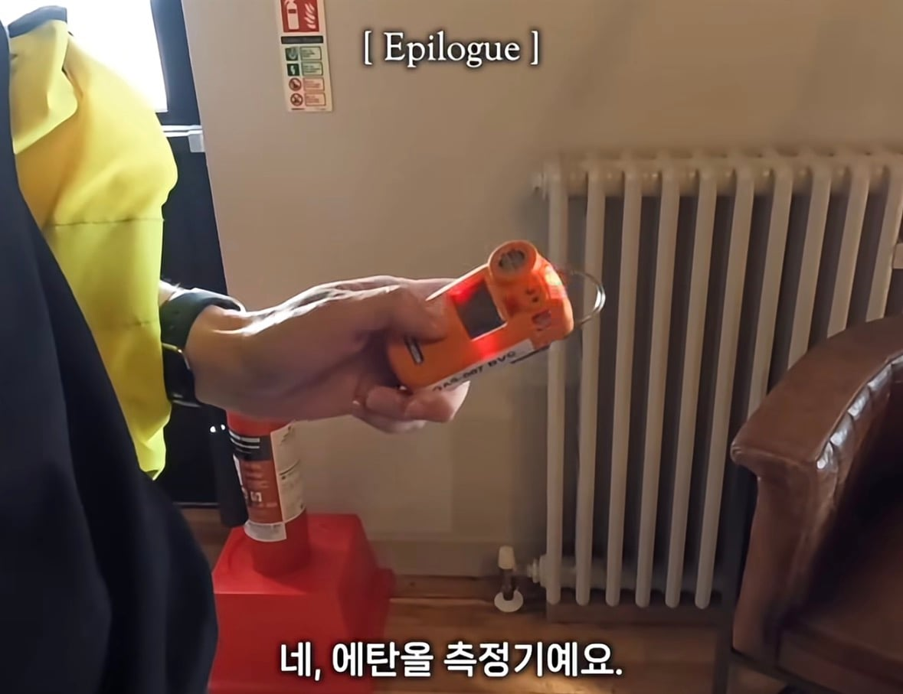
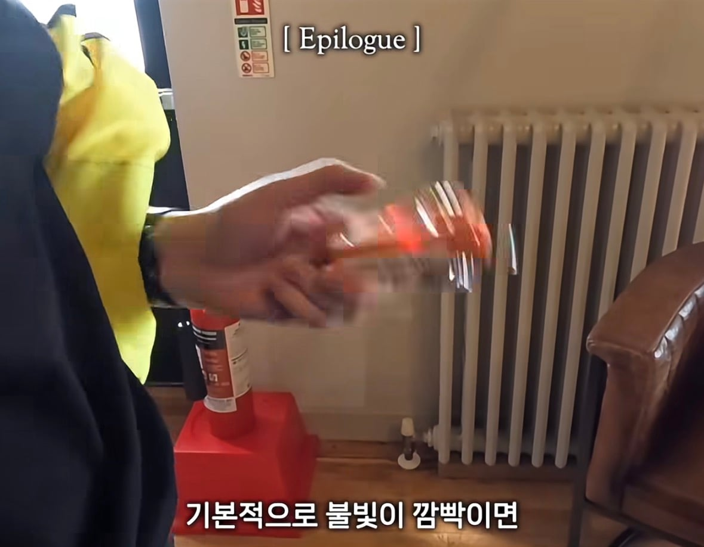
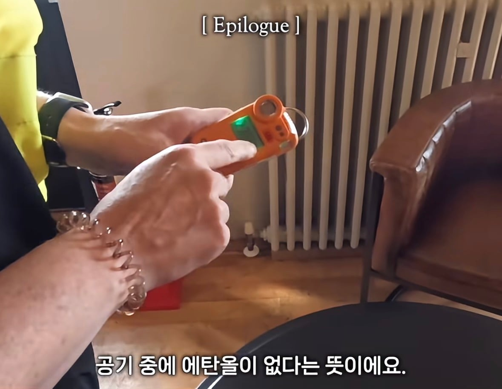
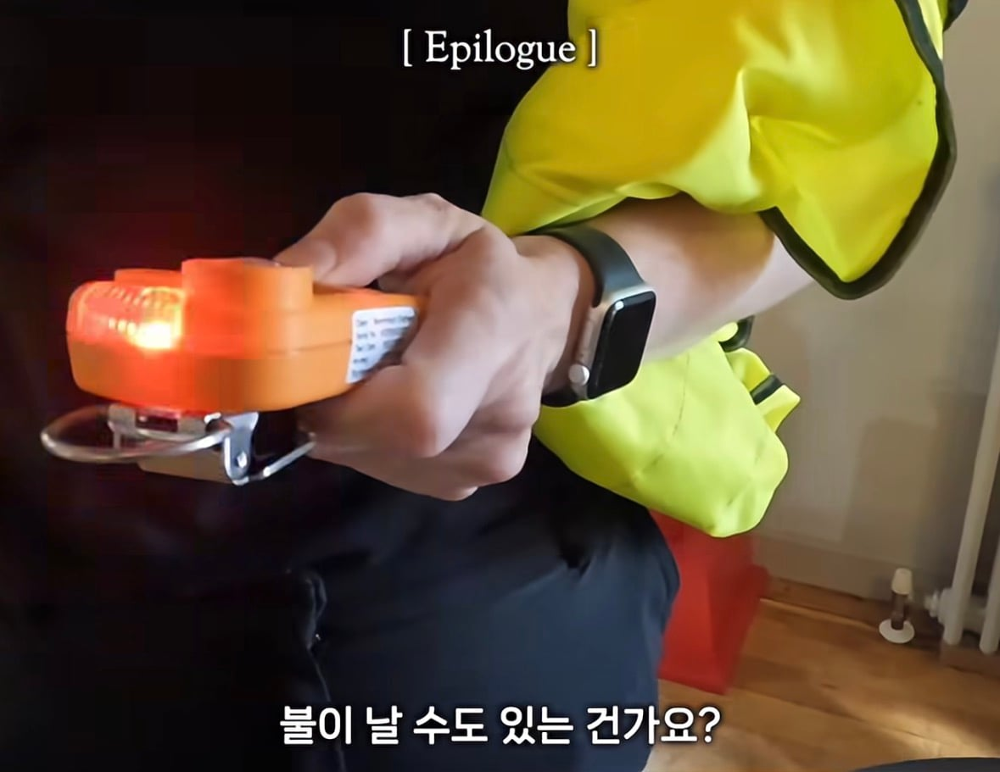
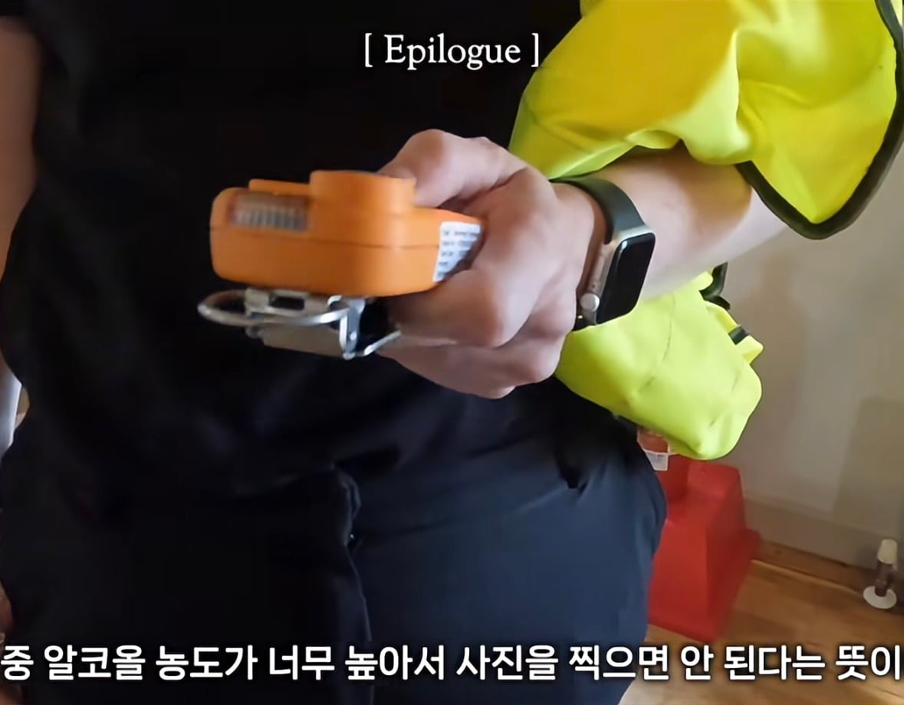

벤로막 증류소에서는 내부 사진을 찍을 수 없다고 함
공기중 알코올 농도가 높아 불이 날 수 있어서..
저런 규칙이 생겼다는건 누군가는 불을 한번 냈다는 뜻이겠지..?





벤로막 증류소에서는 내부 사진을 찍을 수 없다고 함
공기중 알코올 농도가 높아 불이 날 수 있어서..
저런 규칙이 생겼다는건 누군가는 불을 한번 냈다는 뜻이겠지..?
저기서 오랫동안 숨만쉬어도 취하는거야..?
약한 사람은 취할듯ㅇㅇ
모든 안전수칙과 장비는 누군가의 희생?이 있는거지
???: 커버 위에 대변을 누지 마시오
플래시 터질때 열이 어마어마하긴 하지
모기 날개 타서 격추되더라
핸드폰후레시로는 어림도없지?
핸드폰 플래시도 검은 비닐 봉다리 대고 사진 찍으면 녹을정도로 강력함
와 그정도였음?
일반인이쓰는건 그정돈아닌데
조금만 전문적으로들어가도 ㅈㄴ쌤
오래쓰면 전구가 ㄹㅇ 펑소리내면서 터질정도임
옛날에는 1회용이라 한번펑찍으면 전구새거써야했음
실제로 증류소들 화재 많이 일어난다고 하니까. 잭다니엘 증류소 부지에는 아예 자체 소방서도 있음ㅋ
옛날 1회용 플래시들은 전구 필라멘트를 급속도로 빠르게 태워서 썼으니까..
핸드폰으로 찍으면 되겠네 ㅋㅋㄹ
몇 년 뒤 : 핸드폰으로도 찍지마시오
안된다
안전수칙은 피로 쓰여진다. 적혈조술이라는 뜻.
??? : 안전수칙 만들어야 하니까 일단 피를 좀 볼까요?

그럼
적: 적다
혈: 피
조: 만들다
술: 술
이런 뜻이겠구나
배우신 분
기네스 양조장 가보고 싶다
카메라가 취할까봐 ㅠ
스트로보 살에대고 찍으면 ㅋㅋ 화끈함
난 딱 어제 경험함 ㅋㅋㅋ
상황이 플래시 안되는 때여서 급한대로 손으로 막고찍엏는데 와 뭐지 이거 싶을전도로 뜨끈
살약한애들은 사각형 모양으로 빨개짐
??? : 절대로 눈이나 항문에 넣지 마세요
옛날 3~50년대 카메라들은 전구의 마그네슘 같은거 터뜨려서 후레쉬 터뜨리는 식으로 찍어서 그런거 같음
그래서 전구로 된 조명들 맨손으로 잘 만지지 말라고 하는게
열이 높은데 손기름 뭍으면 전구 깨질 수도 있어서 그럼 ㅋㅋㅋㅋ
중국 술 저장소? 숙성고?도 엄청 큰 동굴인데 똑같은 이유로 카메라 못 들고 가더라